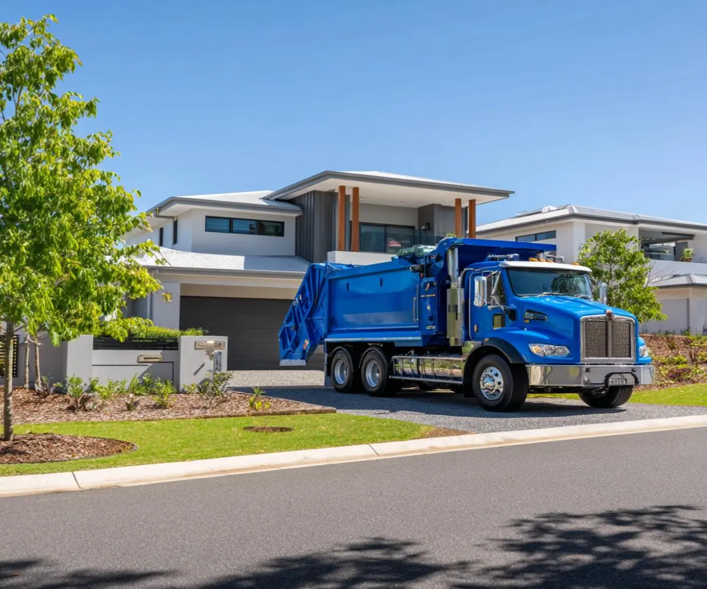
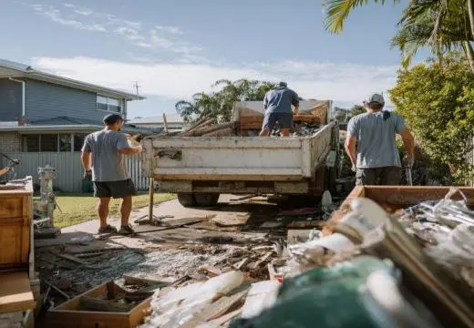
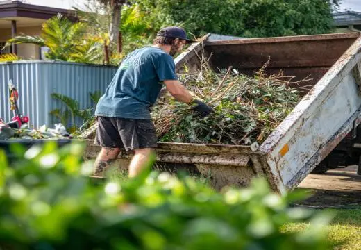
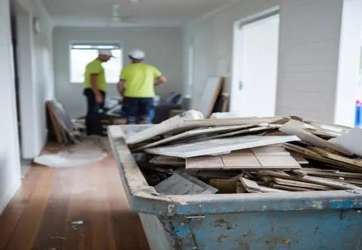
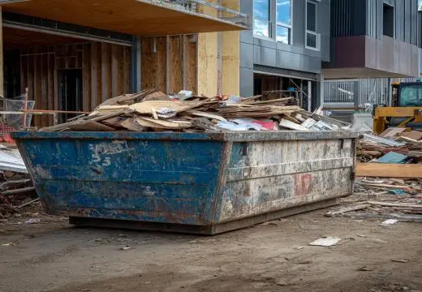
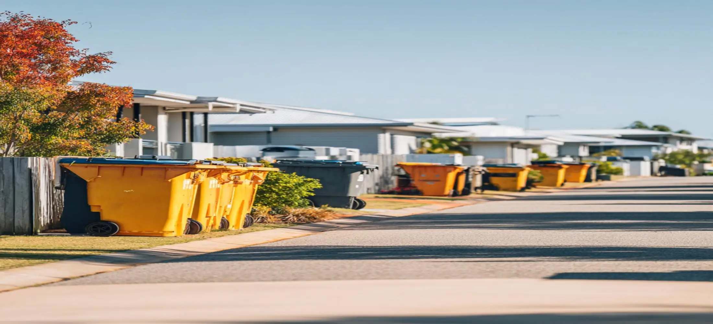
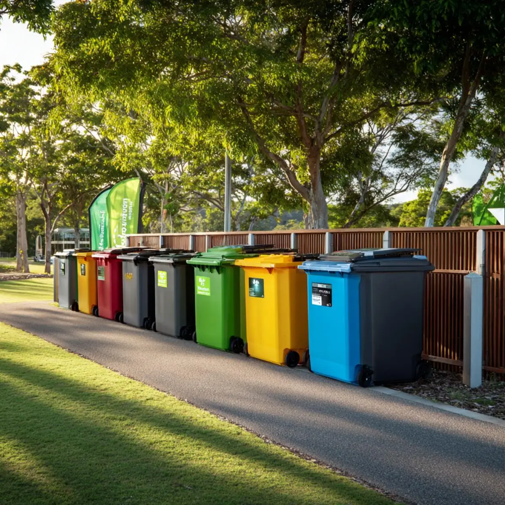
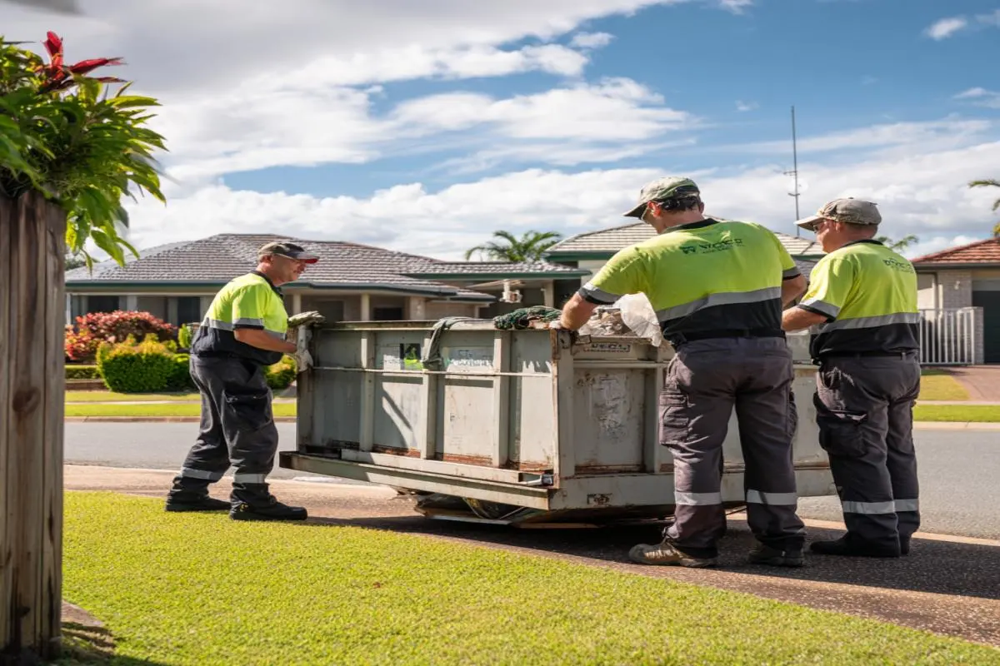

Local Delivery
Servicing Rockhampton and Central QLD areas
We provide skip bin hire in Rockhampton for homeowners, landlords, builders, property managers, and local businesses that need an easier way to dispose of waste. Whether you are cleaning out a house, replacing an old kitchen, clearing a rental property, removing green waste, or managing a construction project, our skip bins help keep rubbish contained and ready for collection. With multiple bin sizes, flexible hire periods, and prompt delivery across Rockhampton, we make waste removal more convenient and cost-effective for projects of all sizes.
Servicing Rockhampton, Norman Gardens, Kawana, Gracemere and surrounding Central Queensland communities

Servicing Rockhampton and Central QLD areas
Household, renovation, green waste, furniture and mixed rubbish
Clear quotes with no hidden fees or unexpected costs
Choose a bin size that suits your waste volume
Different projects create different types of waste. Choosing the right skip bin depends on the material being removed, available site access, and expected rubbish volume. Our rockhampton skip bin hire solutions are used by residential customers, tradespeople, and commercial operators looking for a practical alternative to making multiple trips to local waste facilities.

Ideal for garage cleanouts, moving house, deceased estate clearances, unwanted furniture disposal, and general household rubbish removal. Many customers choose smaller bins for weekend cleanup projects that generate more waste than standard council collection can handle.

Suitable for branches, shrubs, leaves, grass clippings, soil, and landscaping debris generated during yard improvements. Skip bins help keep outdoor projects organised while reducing the need for repeated trailer loads.

Kitchen upgrades, bathroom renovations, flooring replacement, and internal demolition work often create large volumes of waste. Appropriate skip bin sizing helps keep projects moving without waste accumulating on-site.

Businesses, builders, and contractors often require larger bins for ongoing waste management. Skip bins provide a central disposal point for packaging, timber, plasterboard, mixed building waste, and site cleanup materials.
Demand for skip bin hire Rockhampton services comes from a wide range of property types including family homes, rental properties, commercial premises, industrial sites, and acreage developments. Local waste requirements often vary depending on project size, property access, and the type of material being removed.

Residential suburbs throughout Rockhampton frequently generate waste from home upgrades, outdoor improvements, tenancy changes, and general property maintenance. These projects often require skip bins that can handle mixed household rubbish while fitting comfortably within residential driveways and accessible placement areas.
Commercial and industrial locations generally require larger waste capacities due to higher disposal volumes. Construction projects, warehouse cleanouts, retail refurbishments, and office relocations can generate substantial waste streams that benefit from scheduled bin delivery and collection.
Customers searching for cheapest skip bin hire Rockhampton often focus only on price, but selecting the correct bin size is equally important. Choosing a bin that is too small can result in additional collections, while hiring a bin that is too large may increase overall project costs. Matching capacity to expected waste volume usually provides the best value.
Customers comparing skip bin hire near Rockhampton City QLD frequently ask about access restrictions, driveway placement, and delivery timing. Local knowledge helps ensure bins are delivered safely and positioned where loading is easiest for the customer.
We provide skip bins hire Rockhampton coverage across residential, commercial, and industrial areas throughout the region.
Service availability may vary depending on location, site access, scheduling requirements, and current demand across Rockhampton and nearby Central Queensland areas. Give us a call.

Many people searching for skip bin hire Rockhampton are primarily focused on booking the cheapest option available. While price is important, the total value of a skip bin service often depends on bin size selection, delivery timing, waste type compatibility, and pickup flexibility. A lower upfront quote can become more expensive if the bin is too small or unsuitable for the project.
Choosing a properly sized skip bin helps reduce unnecessary handling, keeps work areas cleaner, and prevents delays caused by overloaded bins or additional waste runs. Whether you are clearing a property, renovating a home, or managing a worksite, having enough capacity available from the beginning usually creates a smoother project from start to finish.
Flexible skip bin sizes suitable for small household cleanups, renovation projects, green waste removal, and larger commercial jobs.
Matching waste volume with the correct bin size helps minimise unnecessary collections and avoid overfilling issues.
Customers comparing skip bin hire Rockhampton prices can choose options that balance affordability with practical waste capacity.
Flexible pickup arrangements help customers keep projects moving without piles of waste remaining on-site longer than necessary.
We provide skip bins hire Rockhampton services for residential, commercial, and construction customers who need a practical waste removal solution. Our service is designed to support projects ranging from small household cleanups through to ongoing building and renovation work where rubbish can quickly accumulate and affect productivity.
Property owners often need waste removal during tenancy changes, landscaping projects, garage cleanouts, deceased estate clearances, and home improvements. Builders and contractors commonly require skip bins for timber offcuts, plasterboard, packaging materials, demolition debris, and mixed construction waste. Different project types require different waste capacities, which is why access to multiple skip bin sizes is important.
Customers searching for rockhampton skip bin hire frequently want a straightforward booking process, reasonable pricing, and dependable delivery. Our focus is helping customers choose a suitable waste solution without unnecessary complexity. Whether the goal is reducing clutter, preparing a property for sale, or managing waste generated by a renovation project, skip bins provide a convenient alternative to repeated landfill trips.
Book Skip Bin Now
Reviews from homeowners, renovators, property managers, and local businesses using skip bin hire services throughout the region
“We were preparing our house for sale and needed somewhere to put old furniture, broken shelving, and years of accumulated junk. Having a skip bin delivered made the entire cleanup much faster and easier than expected.”— Sarah & Ben, Frenchville
“Our bathroom renovation created far more waste than we originally planned for. The larger bin option saved us multiple trips to the tip and helped keep the worksite organised throughout the project.”— Liam, Norman Gardens
“We needed ongoing waste removal during a commercial refurbishment. The delivery and collection scheduling worked well with our project timeline and helped keep the site clear for contractors.”— Michael
Skip bin hire Rockhampton prices generally vary according to bin size, waste type, hire period, and disposal costs. Smaller bins intended for household rubbish typically cost less than larger bins used for construction or renovation debris. Obtaining a quote based on the specific project is usually the most accurate way to compare pricing options.
The cheapest skip bin hire Rockhampton solution is not always the smallest bin available. The most cost-effective choice is usually a bin that comfortably fits the expected waste volume. Selecting a bin that is too small can result in additional collections or extra disposal expenses that increase overall project costs.
Smaller 3m³ and 4m³ bins are commonly used for household cleanups, moving house, and garden projects. Medium-sized bins are often suitable for renovation work, while larger bins are generally chosen for construction sites, commercial waste, and substantial property clearances. Waste type and volume are the main factors influencing bin size selection.
Yes. Customers looking for skip bin hire near Rockhampton City QLD often use skip bins for residential cleanups, commercial property maintenance, renovation work, landscaping projects, and construction waste removal. Availability may vary depending on scheduling, location, and delivery access requirements.
Most skip bins accept general household rubbish, furniture, green waste, timber, cardboard, renovation debris, and many common non-hazardous materials. Certain items such as chemicals, asbestos, paints, batteries, and hazardous waste may require specialised disposal methods and should be discussed before booking.
Skip bins eliminate the need for multiple trips, reduce fuel and transport costs, and provide a central location for waste collection throughout a project. This convenience is one of the main reasons homeowners and businesses continue to use rockhampton skip bin hire services for both small and large waste removal jobs.
Receive a fast response with upfront pricing and no hidden fees.